病例摘要與病程
1病例摘要
牛牛，7 歲已結紮公犬，中大型、有點長毛的黑色混種犬（長吻）。家裡還有其他狗。2026-10-12 到聯盟龜山萬壽院初診（報告者：戴子綺醫師），主要想排除心臟問題。
- 主訴：6 月開始呼吸急促，外院診斷肺炎。7–10 月反覆住院；每次出院大約穩定 3 天，第 4 天又開始喘，站著不能躺下休息。精神、食慾尚可。租過製氧機，飼主覺得幫助不大。
- 體重：飼主說 3–5 個月內從約 26–28 kg 掉到 16 kg；住院紀錄 18.8 → 16.1 kg。初診 BCS 3/9，嚴重肌肉流失。
- 最後一次外院出院（10/11）：飼主覺得狗很痛苦、考慮安樂死，外院因此開始給類固醇（methylprednisolone）。
2時間軸
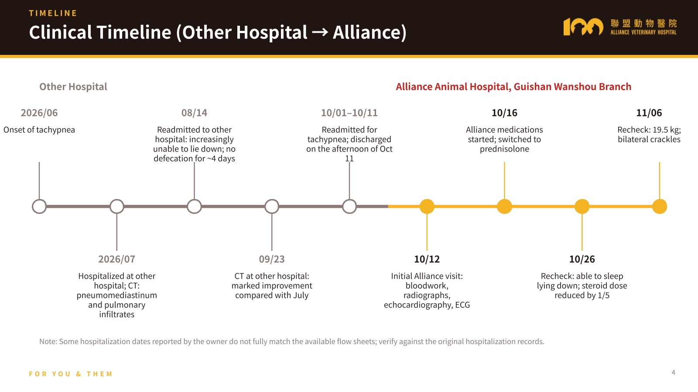
外院資料
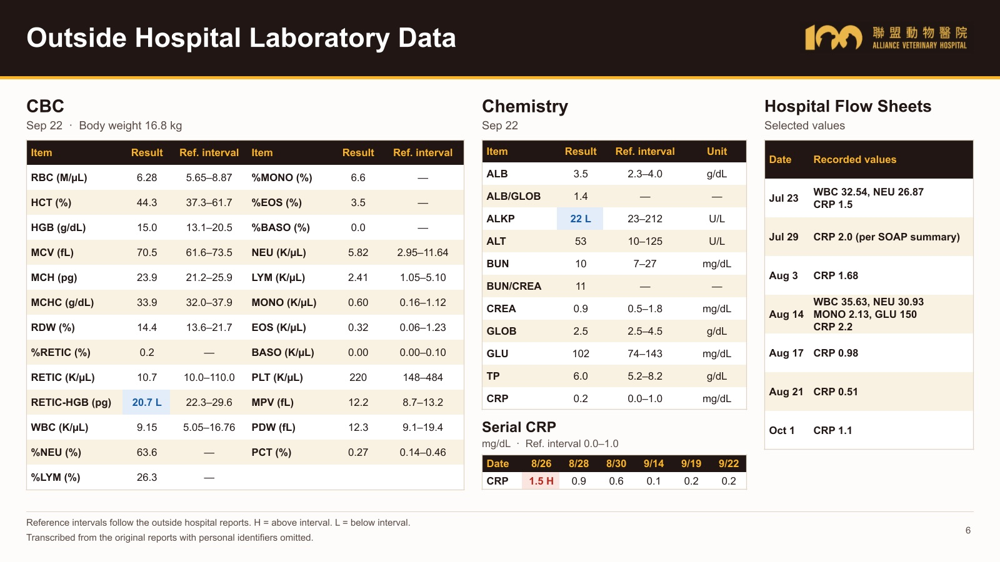
🎤 梅醫師：一開始其實沒有很 inflammatory。她問台灣 CRP 多少算「很高」：戴醫師說 >1 就算高，但如果真的是肺炎，大概至少會到 3，所以覺得這隻的數值並不高。整體血檢沒有大問題。
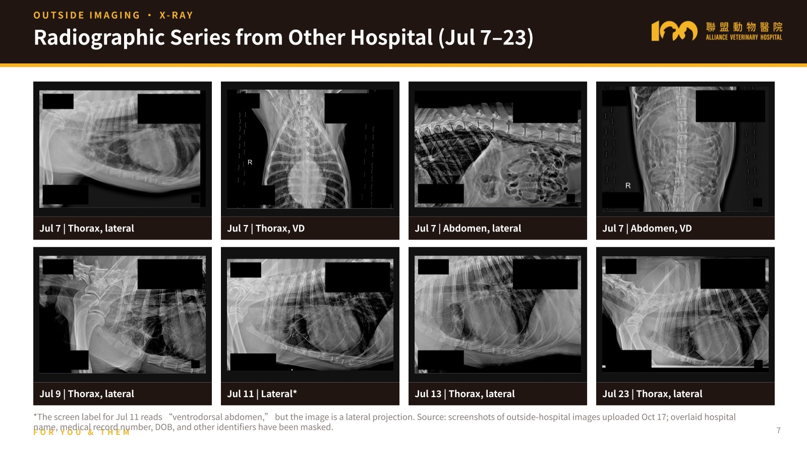
🎤 梅醫師看 7 月的 X 光：肺部看起來有點 diffuse、不一致；腹部那張小腸和結腸很多氣，胃倒沒有很大。戴醫師指出後腹膜腔也有氣（縱膈氣腫往後延伸）；之後的片子就沒有了。梅醫師：很難說是從這邊往上、還是從上面往下；消失得這麼快，聽起來比較像醫源性的（❔ 錄音字詞不清）。單看 X 光，她覺得不會因為肺的原因喘成這樣。
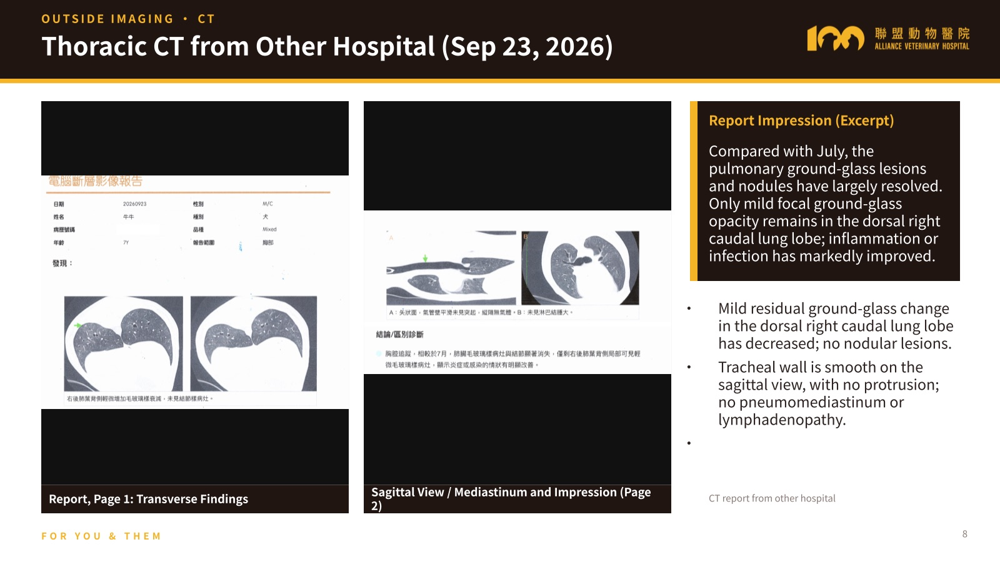
🎤 7 月第一次 CT 的結果飼主沒有拿到，只有 9 月的報告。梅醫師：pulmonary infiltrate 可以是很多東西（nodular、ground glass……），pattern 不同鑑別診斷就不同；沒有一開始的 CT，能想的事情就被限制住了。CT 都做了，資料越完整，對之後接手的人越好。
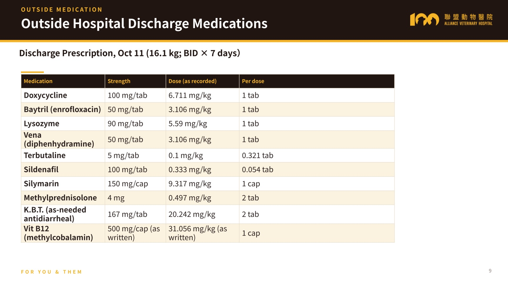
縱膈氣腫的鑑別診斷
🎤 梅醫師覺得縱膈氣腫不是常見的影像發現，雖然之後消失了，一開始看到就值得好好想鑑別診斷。她請大家把自己放在「當下接診、做檢查的醫生」的位置：hindsight is 20/20，重點是下次遇到時，當下要追加什麼檢查。
1肺泡破裂（自發性）
- 文獻上有好幾個名稱：Macklin effect、alveolar rupture、spontaneous pneumomediastinum、air leak syndrome。✍️
- 貓狗都會有，但病例系列不多；通常假設底下有嚴重的下呼吸道或肺部疾病，而且並不常見。
- 怎麼判斷有沒有慢性下呼吸道疾病？問病程（chronicity）：如果是下呼吸道問題導致肺泡破裂，不會只有一兩個禮拜的症狀。仔細問主人臨床症狀和病程，大致就能有答案。
- 這隻看起來比較 acute；但事隔很久，主人只記得某一天突然喘得特別嚴重，不確定之前是否已經有點喘。
肺泡破裂後，空氣沿著支氣管血管鞘往肺門走，進入縱膈；肺表面不一定有破口，所以可以只有縱膈氣腫、沒有氣胸。空氣可再往頸部（皮下氣腫）或往後到後腹膜腔（牛牛 7 月 X 光正有後腹膜氣體）。
2醫源性：插管
- 插管可能造成氣管或食道撕裂。✍️
- 如果 CT 時看到縱膈氣腫，要回頭問負責插管的人或護理師：插管有沒有困難？可能是我們造成的。
- 理論上，如果有內視鏡設備，CT 完趁還在麻醉，就用 scope 檢查氣管和食道，區分 tracheal vs. esophageal tear。說不定狗喘就是因為食道撕裂。
- 戴醫師補充：7 月的 X 光不是在麻醉下拍的，就已經看到縱膈氣腫，所以她比較懷疑是某種創傷。
3穿刺傷、頸部傷口
- 家裡有另一隻狗 → 可能咬、打架 → penetrating wound、cervical wound。✍️
- 梅醫師有時甚至會把整個頸部剃乾淨，看有沒有主人和醫生都沒注意到的傷口；長毛狗更不明顯。
4從裡面來的創傷：吃到尖銳異物
- 吃到樹枝或其他東西刺穿。不一定要真的刺進氣管或食道；刺到咽部、喉頭，氣體也可能往下走到縱膈。而且會很痛，所以在家一直喘。
- 戴醫師：主人描述一開始喘到很痛苦、還流口水，所以她也懷疑有某個事件。
- 中大型犬比較常在外面咬東西吃。亞洲和美國都很愛餵雞骨頭，梅醫師的醫院處理過好幾隻雞骨刺穿食道的病例。
- 問飲食史的技巧：不要只問「平常吃什麼」，要反過來問 “What goes into your dog’s mouth?”——任何進到嘴裡的東西，主人才會比較努力回想。
要嘛是醫源性的（人造成的），要嘛是狗自己造成的，或真的有下呼吸道疾病。以這隻來說，她覺得最可能是狗自己吃到東西刺到喉咽部，造成持續發炎，同時也吸入（aspirate）——異物、發炎、吸入一起來。
抗生素：meropenem、培養與細胞學
1「越嚴重就要用越厲害的抗生素」是迷思
- 外院 7 月一開始就用 IV meropenem。梅醫師：病越重、CT 或胸片越嚴重，就要用「越厲害」的抗生素——這個觀念現在來看並不恰當。
- Meropenem 確實很廣效、什麼都包，但不代表前線抗生素包不到。用後線藥之前要問自己：我有沒有懷疑這隻菌有抗藥性？例如已經在前幾家醫院用過 Unasyn、Baytril、doxy、clinda，first line、second line 都用完還是很糟、快死了，那才有 justification。
- 她最喜歡的例子是 Enterococcus：很多抗生素天生無效（intrinsic resistance），但最簡單的 ampicillin／amoxicillin 就可以。拿「大」抗生素去壓，反而沒用。✍️
2順序反了：先大後小
8 月再住院時反而改回 IV Augmentin。梅醫師：一開始用 meropenem，沒有好轉時反而換成比較前線的藥，聽起來像在亂配抗生素。就算要用後線藥，合理順序也應該是先給 Augmentin 兩週、沒有好轉，才升級——不是先用大、後用小。
戴醫師補充：飼主說培養之後的抗生素有依照培養結果。梅醫師：用到 meropenem 通常都會有效，除非是 MRSP 之類。
3怎麼讀培養報告
- 看長得多 heavy：好的實驗室會寫 light growth 還是 heavy growth。
- Pasteurella multocida 是很常見的口腔或上呼吸道菌，要考慮是不是 contaminant——做 tracheal wash 時無菌程度如何？
- 如果要轉到 enrichment culture 才長出來，她就會很懷疑它是不是真正的問題。
- 外院的培養與細胞學報告沒有拿到，只記在住院紀錄裡；飼主不太想讓兩家醫院接觸。梅醫師：在美國通常直接打給前一家醫院拿報告，不經過主人，除非主人明確反對。
4細胞學比培養更能確認肺炎
- 如果在 neutrophil 或 macrophage 裡看到細菌，她就會非常相信是真的肺炎。
- 細胞學沒看到細菌、培養又長得很少：狗很不舒服，大家還是會傾向開抗生素，但適應症就沒有到 100%。
- 結論寫「neutrophilic inflammation」，不代表沒有其他細胞；要看完整的細胞學報告，有時裡面還有 10% 左右的 eosinophil 沒寫進結論。如果 eos 偏高，就要擔心別的病因——也可能是真的肺炎把 eosinophilic 發炎蓋過去了。
- 外院一開始就做了 CT 和沖洗，資料比一般病例多很多（一般只有胸片、沒有沖洗）；把這些報告拿全，對後續治療很有幫助，而不是用猜的。
肺好了還在喘：逐段定位
戴醫師覺得奇怪的是：7 月確實有症狀和影像變化，但在聯盟拍的片子肺部看不出明顯異常，狗卻還是很喘（只是沒有 7 月那麼喘）。梅醫師帶大家把呼吸道分段看：
| 部位 | 這隻的發現 | 判斷 |
|---|---|---|
| Pleural space | 沒有積液或其他異常 | 不太像 |
| 肺實質 | 只有 cranioventral（也可能是重疊）；沒有很多 patchy alveolar pattern | 原發肺實質疾病可能性不高 |
| 下呼吸道 | 感覺有點 diffuse bronchitis | maybe |
| 上呼吸道 | 還沒評估 | 要往上看 |
1往上看：頸部與喉頭
- 能拍 cervical radiograph，或做 CT 時把頸部也包進去，特別是在懷疑頸部傷口或異物時很有用。
- 麻醉時好好做口腔檢查。
- 問主人：狗吠叫的聲音有沒有不一樣？比較粗或比較尖？——這是在問喉頭。
- 梅醫師一聽這個病例就覺得像喉頭疾病：有喉頭問題的狗常吸進很多空氣（aerophagia），腸胃道裡就會積氣。如果當時麻醉有看喉頭，說不定能看出 laryngeal paralysis；也可能是喉頭發炎太嚴重，吃了類固醇反而好一點。
他可能確實有吸入性肺炎，原因是喉頭疾病。所以吃了抗生素，CT 上肺變好了；但症狀還在，是因為本身的問題還沒治好——問題主要不在下面，而在上面。
- 她的醫院現在的做法：只要因呼吸道問題做 CT，一定同時做喉頭檢查（laryngeal exam）。
- 有文獻指出很多這類狗都有喉頭異常；它們可能是呼吸症狀的原因，也可能是呼吸道疾病的結果——例如逆流造成喉頭水腫、發炎，又讓狗更容易吸入。
- GI 和呼吸系統常常是一起的：一個系統有事，也要看另一個。這隻一直有脹氣，可能本身有腸胃蠕動問題 → 逆流 → 喉頭出問題 → 沒被處理 → 反覆吸入。
戴醫師問：喉頭問題會喘到睡不著、不能趴下嗎？梅醫師：這兩個月的喘不一定是呼吸道造成的。如果真的像戴醫師懷疑的有胃潰瘍之類，會不會其實是很痛？這隻狗一直沒有用止痛藥（見第九節）。
外院用藥逐一檢視
| 藥物 | 處方 | 梅醫師的看法 |
|---|---|---|
| Doxycycline | 100 mg（6.7 mg/kg）BID | 合理。甚至一開始當 first line 都可以接受：抗藥性不高、光譜廣，萬一是跟別的狗玩染到的感染性支氣管炎也有涵蓋。 |
| Baytril（enrofloxacin） | 50 mg（3.1 mg/kg）BID | 不適當。FQ 是 concentration-dependent，應該高劑量一天一次；這裡劑量偏低又分兩次，可能連 MIC 都沒達到。 |
| Diphenhydramine（Vena） | 3.1 mg/kg BID | 大概是當成過敏性支氣管炎。它是 anticholinergic，會影響呼吸道分泌物；除非真的懷疑很急性的過敏反應，否則不太適合。 |
| Terbutaline | 0.1 mg/kg BID | 同意戴醫師：這個病例好處可能不大，大概沒害處但也不知道有沒有幫助。貓比較會有支氣管痙攣；狗只有部分慢性呼吸道疾病、CT 有較嚴重支氣管塌陷的久咳狗可以考慮。而且劑量太低。 |
| Sildenafil | 0.33 mg/kg | 現在沒有適應症（心超無明顯肺高壓），劑量也不對。❔ 錄音此處聽成 salbutamol，依處方表推為 sildenafil。 |
| Silymarin | 9.3 mg/kg | 因為吃 pred 而加肝藥：不需要。Prednisolone 不是肝毒性藥物，只會誘導類固醇型 ALP；除非肝功能本來就差、代謝藥物吃力。 |
| Methylprednisolone | 4 mg × 2 tab BID（約 0.5 mg/kg BID） | 約 1 mg/kg/day，可以接受。 |
- 戴醫師提到台灣很多醫師習慣在咳嗽動物開 theophylline、aminophylline 這類支氣管擴張劑；她讀到狗比較少有支氣管痙攣，所以效果有限，貓可能才有用。梅醫師同意。
- 外院說是「死馬當活馬醫」。梅醫師：就算死馬當活馬醫，至少也要用對劑量——if you’re gonna do it, just do it.
More drug is not better。藥越多，只是增加主人每天餵藥和狗吃藥的負擔，而且不知道藥物之間有沒有交互作用——polypharmacy is a thing。開這麼多藥時要 double check 交互作用；Plumb’s 現在有 interaction checker，很方便。✍️
聯盟的檢查結果
1理學檢查與生命徵象
- 10/12：16.7 kg；脈搏 72；收縮壓 150；ECG 竇性心律不整、HR 約 65。影片中仍很用力呼吸（已經是比較好的時候）。
- 10/13：RR 院內 28、家中 33（初診問診時家中約 50）。
- 10/26：18.8 kg；脈搏 90；收縮壓 160；仍有腹部用力，但改善；可以躺下睡。
- 11/06：19.5 kg；雙側 crackles；活動、食慾正常；仍可躺下。收縮期雜音 II/VI。
2胸腔 X 光
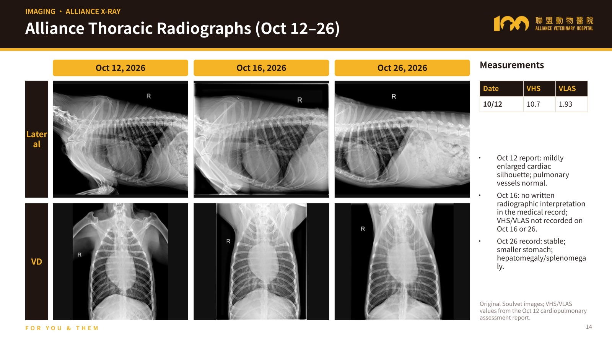
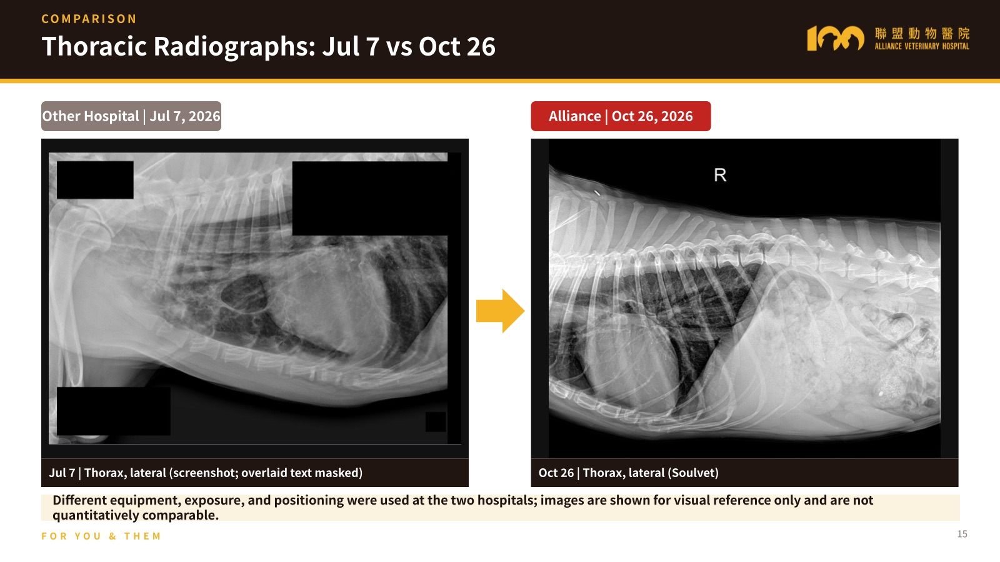
🎤 梅醫師：確實比 7 月好很多，腸胃道也沒之前那麼「髒」。她認為 7 月應該有吸入的成分，但應該還有一個 underlying cause 讓牠吸入。
戴醫師：10/12 的片子胃裡東西很多，問主人什麼時候吃飯，時間點都不是很近；她不確定是因為喘、吸進空氣讓肚子脹，還是肚子脹讓牠不舒服而喘——哪個是因、哪個是果。
3心臟
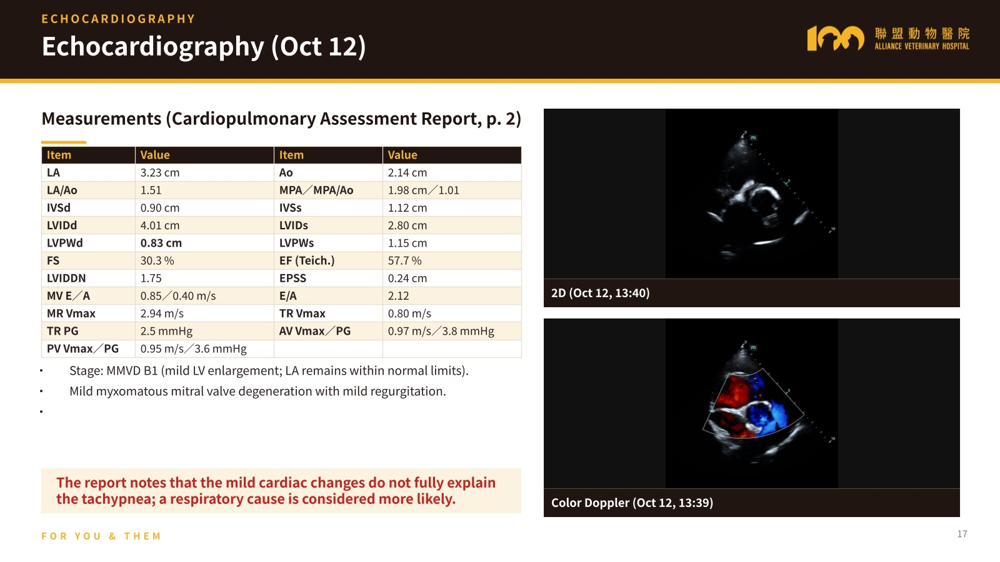
4腹部超音波（10/13）
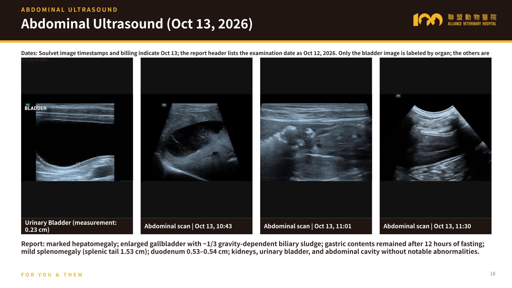
戴醫師：腸道黏膜看起來有一些凹陷、整體怪怪的；加上一直變瘦，她懷疑有原發性腸胃問題。
5血檢
- WBC、NEU、MONO 持續偏高（NEU 14.34–21.83）；RBC/HCT 10/12 偏低，之後恢復。
- ALT 127 → 194 → 210 → 97；ALKP 437（10/26）→ 248（11/06）。戴醫師認為與類固醇有關。
- CRP 四次都是 0.2 mg/dL；cPL（QPL）47 U/L；SNAP 4Dx Plus 全陰性。
6聯盟治療
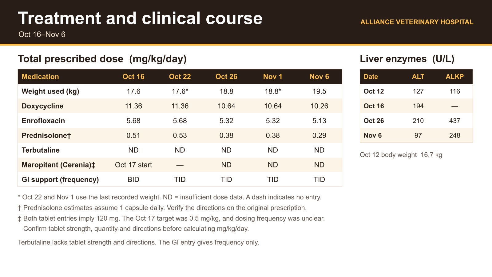
戴醫師做的改變：最後這次才開始吃類固醇（改成 prednisolone 並慢慢減量）、少量多餐、促進蠕動與消脹氣藥。過了以往出院後第 4 天會開始喘的時間點，牠都沒有再喘。她不確定是病程本來就要好了，還是這些改變有效。Baytril 她有請主人改成一天一次、足劑量，但主人怕改變穩定的狀況，還是分兩次給。
外院還曾經叫主人搬家（懷疑家中灰塵）。梅醫師：她叫過美國主人把十年沒換的地毯整個拆掉，但叫人搬家還是第一次聽到；比起搬家，放一兩台空氣清淨機比較實際。
腸胃道與胃食道逆流
1梅醫師的整體判斷
梅醫師同意戴醫師的懷疑：牛牛應該有某種原發性腸胃道疾病。她把這個病例分成兩個角度：
- 純粹從呼吸道開始：可能有喉頭創傷，或進行性喉麻痺 → 吸入、大量吞氣、喘、吃得少。要問吠叫聲音有沒有改變；等狀況許可，喉頭檢查還是 warranted。現在穩定，可以先不急著麻醉。
- 逆流性疾病（reflux disorder）：戴醫師描述的所有徵象，讓她覺得更可能是這個。慢性體重下降可能真的有原發疾病 → 逆流，可以一路逆流到喉頭、甚至鼻咽 → 喉頭發炎、吸入性肺炎。
狗躺下時身體是完全平的，沒有重力幫忙，所以有逆流的狗躺下或晚上睡覺時會更糟，看起來很喘。就像人胃食道逆流（火燒心）時胸口很痛、有點喘不過氣——狗可能也是類似的表現。
2體重下降
- 梅醫師想知道牠喘了多久、缺氧多久——這麼喘，吃飯也不會順利。
- 戴醫師：主人描述是慢慢變瘦，不是一下子。仔細算之後發現熱量真的不夠：以前食慾好、會搶食；後來食慾變差改煮鮮食，量不一定對。住院和在家都「亂餵」（人的食物加飼料，但不是炸雞那種）；現在已改成飼料為主。
- 梅醫師：pred 除了對喉頭有幫助，可能也對 GI 疾病有幫助，所以整體增重。有些大型狗吃 pred 反而會掉體重，所以她傾向認為 pred 對 GI 有作用。
- 沒有 B12、folate 數值，因為已經在補 B12。如果停了 B12，可以再驗；但在所有藥裡，她寧願 B12 繼續吃。
3糞便潛血
- 戴醫師問梅醫師會不會做糞便潛血。梅醫師：有時候會，但要小心解讀。在家有吃肉的狗很容易陽性。陰性比較有參考價值（比較相信沒有在流血）；陽性很難解讀，要看臨床症狀和 CBC，必要時經驗性治療。
- 戴醫師問：吃鐵劑會不會造成陽性？她做過實驗，直接把補血劑加進試劑不會變色，但不確定消化後的鐵會不會。梅醫師說她沒想過這個問題，還要再想想（未回答）。
- 這隻的潛血很藍，戴醫師擔心可能真的還有潰瘍。
疼痛與多模式止痛
戴醫師有跟主人提過疼痛的可能，但外院一直在治療肺；給了腸胃藥之後狗又能趴下，就沒再試止痛。她擔心不能給 NSAID，只能給嗎啡類，會不會讓腸子更不蠕動？
疼痛會造成 ileus，止痛藥也會造成 ileus——這是每天都會遇到的問題。但不能忽略疼痛：肚子痛過的人都知道，那時候你會希望有 opioid。重點是取得平衡。
- 從低劑量開始，例如低劑量 methadone、hydromorphone，看 ileus 會不會變很糟；可以耐受就慢慢加。
- 多模式止痛（multimodal approach）：例如 fentanyl CRI＋ketamine CRI，或加 dexmedetomidine CRI，把 fentanyl 的需求量降到最低。✍️
- 用 CRI 的好處：如果 ileus 變很糟，至少可以馬上停。住院時還可以加促進蠕動的 CRI，呼吸狀況允許時帶牠走路，確保腸胃蠕動 OK。
1台灣能用的口服／居家選擇
戴醫師：台灣沒有 methadone 這類藥；針劑可以讓主人回家打。問 buprenorphine、tramadol 和 acetaminophen 能不能用在狗。
| 藥物 | 梅醫師的看法 |
|---|---|
| Buprenorphine | 在狗的效果還好（不如貓），而且很貴；這個體型的狗兩天的藥就很貴，她很少選。 |
| Tramadol | 她們很久沒用了；有些研究反而是貓的效果好一點。 |
| NSAID | 這隻不能用。 |
| Acetaminophen | 可以考慮，前提是水合狀態好、能吃能喝。美國用得少，歐洲用得多、很習慣；她自己只用過兩三次，所以還是有點怕，無法用經驗保證沒事。 |
Fentanyl 2–5 µg/kg/h（負荷 2–5 µg/kg）；ketamine 0.12–0.6 mg/kg/h（2–10 µg/kg/min）；dexmedetomidine 0.5–2 µg/kg/h；lidocaine 25–50 µg/kg/min（貓避免）。Acetaminophen 犬常用 10–15 mg/kg PO q8–12h；貓絕對禁用。使用前請依最新藥典確認。
接下來的處置
1停抗生素：錯開停
- 肺已經清了這麼多，還需要抗生素嗎？梅醫師不確定，但如果主人擔心，可以慢慢停。
- Enrofloxacin 目前約 5 mg/kg/day，屬於偏低端；她現在建議至少從 10 mg/kg SID 開始（錄音聽成「10 mcg」，依上下文應為 mg）。這個劑量已經偏低，她會很放心先停 Baytril。
- 主人會怕，可以先說「我們先停三天」；如果沒有問題，再把 doxy 也停掉。Doxy 也可能造成食道炎和腸胃不適，長期吃對狗未必好——治療急性肺炎有用，但不適合一直吃。
- 要錯開停：萬一停了以後又不舒服，才知道是哪個、要怎麼 restart。
2飲食
- 原則：低脂（low fat）＋低纖、好消化（low fiber）。如果有蠕動問題，食物越快通過越好；留在胃裡越久，越容易逆流。
- 澱粉：看是哪一種。這隻不用擔心血糖，從消化率下手；就像人生病吃白飯、粥，好消化。重點其實是 soluble vs. insoluble fiber。
- 蛋白質：看動物。體重掉很嚴重的 GI 動物，蛋白質要給多一點，不然肌肉流失很快；多數 GI 處方（acute GI diet）都是低脂、蛋白質偏高來補償，這合理。但蛋白質不是最好消化的（雞肉 vs. 白飯，一定是白飯好消化），所以有些動物要 moderate。
- 對這隻在吃 pred 的大型犬：先 low fat、low fiber，蛋白質高一點沒關係；如果高蛋白也會讓牠逆流，再調整。
- 處方：Royal Canin GI Low Fat、Purina EN Low Fat、Hill’s 低脂系列都 OK。如果真的是 CIE（chronic inflammatory enteropathy，以前叫 IBD），之後可能要 novel 或 hydrolyzed protein 的低脂處方，但比較貴；除非主人想一開始就涵蓋最多。
- 家裡多犬：要確保分開餵，或乾脆大家吃一樣的；狗很會討零食，一定要很嚴格。
3Prednisolone 減量
戴醫師目前每兩週減 1/4，擔心大型犬長期吃類固醇會有累積性副作用。目前約 10 mg/day（19.5 kg，約 0.5 mg/kg/day）。
- 梅醫師：這個劑量對這體型算中等；長期吃幾個月，只要沒有明顯副作用她不太擔心——內科最後能用的藥常常就是 pred。
- 反而要注意：pred 有時會讓 panting 更嚴重；對有下呼吸道問題的狗，可能讓氣道軟骨變弱。但這隻看起來 pred 是有幫助的，所以不要急著減。
- 真的有 IBD 需要 pred 的狗：起始劑量（例如 20 mg）可能給一個月才開始減，每次減量間隔 1–2 個月，最後可能吃到 6–8 個月（後幾個月劑量很低）。
未來一兩週要停抗生素、換飲食，這段時間不要動 pred。大約 12 月初再從 10 mg 降到 7.5 mg（減 25%），然後維持 7.5 mg 到過完新年——年底總是會有不好的事情發生，所以先別碰它。
- 王醫師問：減量幅度要 10%、20% 還是 25%？梅醫師：沒有標準答案，要看治的病、狗對藥的耐受與反應，還有現實的藥錠能怎麼切——最多切到 1/4，不可能為了完美劑量磨粉再分包。
- 慢性 GI 或呼吸道發炎疾病：通常每個月減約 25%。10 mg 錠 → 3/4 錠＝7.5 mg；或用 5 mg 錠給 1.5 顆，比較好分。
- 貓或小狗一次減太多的話，有液劑可以做 10–15% 的小幅調整，避免 relapse。
- 在同一個劑量吃越久，減量要越慢。
梅醫師也認為最後一次出院比較好，很可能是因為 pred，以及戴醫師處理了 GI 的問題。
4要不要加 omeprazole？
- 戴醫師目前沒有給 omeprazole（有給 mosapride）。梅醫師：現在不需要。
- 但以後可能會需要：有些狗的胃食道逆流只能 control、不能完全 resolve，就像人一樣；有些狗要長期吃 omeprazole。她不喜歡 chronic PPI，但有時還是需要。
- 長期吃 omeprazole 的問題：dysbiosis，以及胃本身的結構性變化——她分享了一篇 JAVMA 新文章。✍️
Ultrasonographic features of gastric mucosal hypertrophy in dogs receiving chronic omeprazole: a retrospective case series. 9 隻連續用 omeprazole ≥ 5 個月的中大型犬（適應症：PSS、胃潰瘍、慢性腸病）。超音波：全部以黏膜層為主、位於胃體與胃底（環狀 7、局部 2）；黏膜高回音、輕度不均質、邊緣波浪狀、胃皺襞變厚；4 隻黏膜內有低回音到無回音小圓形構造；8/9 胃壁分層保留，無局部淋巴結腫大。4 隻有組織病理，符合 PPI 相關黏膜肥厚（mucous neck cell 增生）。臨床意義：認得這個型態，可避免誤判為浸潤性腫瘤或嚴重胃炎。
機轉推測（摘要未寫）：長期抑酸 → gastrin 持續升高 → 黏膜增生。摘要也沒有提到停藥後是否可逆。
如果又喘了：進一步檢查
主人一直問：萬一哪天又喘，要怎麼辦？要再做一次 CT 嗎？
- 不一定要再做 CT：CT 已經顯示沒有真正的肺部病變；再做大概也只會看到吸入性肺炎，因為 GERD 還沒被處理。
- 等穩定下來，她會先做喉頭檢查，然後做兩個 scope：
- 氣管鏡／支氣管鏡：長期吸入的狗，氣管環看起來會不一樣——有點紅、有條紋。同時再做一次培養，確認是否真的有吸入，再依結果給抗生素。
- 上消化道內視鏡：看食道和胃——有沒有明顯潰瘍、下食道括約肌周圍是不是都紅的（代表一直在逆流）；運氣好還可能看到 hiatal hernia。
- 狀況很穩定時，可以做吞嚥檢查（swallow study／透視），通常需要放射科醫師在場。
- 她不覺得這隻目前一定需要這些，應該可以被控制；但要讓主人知道理論上能提供的選項有這麼多。
1食道蠕動異常時的進一步檢查
- 內分泌：hypothyroidism、Addison’s。現在在吃 pred，所以不能驗 Addison；甲狀腺可以驗，但要驗 full panel（pred 會影響 total T4），或等狀況好一點再驗。
- 重症肌無力（myasthenia gravis）：有些是 focal form，可能只有巨食道，有些狗只有食道 dysmotility。✍️
一隻約 10 歲的 Lab 一直吸入，建議做 swallow study，主人一直拖。最後終於做了，發現有 dysmotility；去驗 MG，抗體力價剛好卡在偏高、但沒有真的超標，治療後就沒事了。現在回想：應不應該在沒做 swallow study 前就先驗？它只是抽血，不需要那麼多設備；有的話就能提早處理。她們很懊惱沒有早點驗，讓那隻狗吸入了那麼多次。
AChR 抗體檢測是黃金標準；胸腔影像要看巨食道、吸入性肺炎與前縱膈腫塊（胸腺瘤）。治療以 pyridostigmine 為主；吸入性肺炎是主要死因。多數犬約 6 個月內自發緩解，可追蹤抗體力價。Aminoglycoside、fluoroquinolone、magnesium 可能惡化神經肌肉傳導，有 MG 疑慮時要留意。
附錄：IV 藥物配製表
🎤 討論最後，梅醫師回覆戴醫師之前問的 IV Baytril 稀釋問題：她向醫院的護理師要了一份常用藥物的配製表分享給大家。
- 她們通常稀釋成 10 mg/mL 的溶液（美國的 2.27%＝22.7 mg/mL，約稀釋 2 倍）。
- 台灣的是 50 mg/mL → 稀釋 5 倍到 10 mg/mL。體積會很大，但可以給久一點：表上是 30–60 分鐘，體積這麼多就給約 2 小時。大狗、心臟沒問題、能承受體積的話，也可以 1 小時。
- 可以的話，她們還是比較 prefer IV 而不是 SC。
❔ 註錄音把藥名聽成「basal」；依「美國 22.7、台灣 50 mg/mL」和配製表內容，推測是 enrofloxacin（Baytril）。
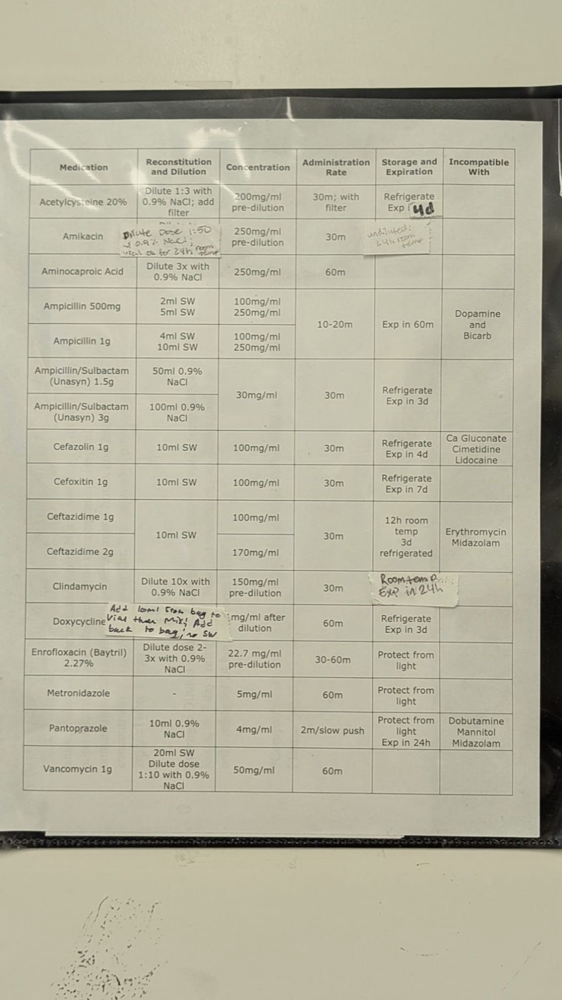
| 藥物 | 配製／稀釋 | 濃度 | 給藥時間 | 保存／效期 | 配伍禁忌 |
|---|---|---|---|---|---|
| Acetylcysteine 20% | 1:3 用 0.9% NaCl 稀釋；加過濾器 | 200 mg/mL（稀釋前） | 30 分鐘，用過濾器 | 冷藏，✍️ 4 天 | |
| Amikacin | ✍️ 劑量 1:50 用 0.9% NaCl 稀釋；藥瓶室溫可放 24 h | 250 mg/mL（稀釋前） | 30 分鐘 | ✍️ 未稀釋：室溫 24 h | |
| Aminocaproic acid | 用 0.9% NaCl 稀釋 3 倍 | 250 mg/mL | 60 分鐘 | ||
| Ampicillin 500 mg | 2 mL／5 mL SW | 250／100 mg/mL | 10–20 分鐘 | 60 分鐘內 | Dopamine、bicarbonate |
| Ampicillin 1 g | 4 mL／10 mL SW | 250／100 mg/mL | 10–20 分鐘 | 60 分鐘內 | Dopamine、bicarbonate |
| Ampicillin/sulbactam 1.5 g／3 g | 50／100 mL 0.9% NaCl | 30 mg/mL | 30 分鐘 | 冷藏 3 天 | |
| Cefazolin 1 g | 10 mL SW | 100 mg/mL | 30 分鐘 | 冷藏 4 天 | Ca gluconate、cimetidine、lidocaine |
| Cefoxitin 1 g | 10 mL SW | 100 mg/mL | 30 分鐘 | 冷藏 7 天 | |
| Ceftazidime 1 g／2 g | 10 mL SW | 100／170 mg/mL | 30 分鐘 | 室溫 12 h；冷藏 3 天 | Erythromycin、midazolam |
| Clindamycin | 用 0.9% NaCl 稀釋 10 倍 | 150 mg/mL（稀釋前） | 30 分鐘 | ✍️ 室溫 24 h | |
| Doxycycline | ✍️ 從輸液袋抽 10 mL 打入藥瓶混勻，再打回袋子；不用 SW | （照片不清）稀釋後 | 60 分鐘 | 冷藏 3 天 | |
| Enrofloxacin（Baytril）2.27% | 劑量用 0.9% NaCl 稀釋 2–3 倍 | 22.7 mg/mL（稀釋前） | 30–60 分鐘 | 避光 | |
| Metronidazole | — | 5 mg/mL | 60 分鐘 | 避光 | |
| Pantoprazole | 10 mL 0.9% NaCl | 4 mg/mL | 2 分鐘緩慢推注 | 避光，24 h | Dobutamine、mannitol、midazolam |
| Vancomycin 1 g | 20 mL SW；劑量再 1:10 用 0.9% NaCl 稀釋 | 50 mg/mL | 60 分鐘 |
其他 Q&A
1類固醇與皮膚鈣化（calcinosis cutis）
問（戴醫師）：有些吃 pred 的狗最後皮膚鈣化，好像很難恢復。這麼大隻的狗吃到什麼劑量會出現？
- 梅醫師：這隻的劑量她不擔心。一開始 20 mg/day 算中偏高，但減量算快；10 mg 造成 calcinosis cutis 不太可能，何況已經計畫減量。
- 典型會出現的情況：例如 20 kg 的狗一開始吃 40 mg，像 IMHA、ITP 那種，又很 refractory、每次減量就 relapse，吃 40 mg 吃了兩個月才開始不對勁；或是 MUO（❔ 錄音聽成「MU」）那類 pred 很難減的病。
- DMSO：皮膚科意見分歧，有人覺得有效、有人覺得有沒有都一樣。真正要好，很難，除非把 pred 完全停掉。
問：停掉之後皮膚會恢復正常嗎？有主人皮膚爛到想安樂死。
- 梅醫師：很難完美恢復，但可能會結痂，之後摸起來有點凸、有點硬，至少不會不舒服，只是不好看。幾年前治過 IMHA、ITP 的狗回來，現在還摸得到以前那個小小硬的地方。
- 完全停 pred 後，癒合可能還要 6–8 個月。
- 看起來更糟的時候，常常是合併淺層或深層膿皮症，也要治療，不然只會更惡化。皮膚科會建議外用 chlorhexidine（如 Douxo 系列）一天 1–2 次，或 mousse 劑型。
- 記得做細胞學：看有沒有 nuclear streaming（嗜中性球都爛掉）、細胞內球菌；表面污染和真正膿皮症看起來不同。不確定的話，至少外用是比較 benign 的選擇，不用一開始就給口服抗生素。
Take-home messages
- 看到縱膈氣腫，當下就要追：肺泡破裂（Macklin effect／air leak）、插管造成的氣管或食道撕裂、頸部穿刺傷、吃到尖銳異物刺穿咽部；趁麻醉做氣管和食道 scope，把頸部剃毛檢查。
- 問飲食史要問「什麼東西進過牠嘴裡」，不只是平常吃什麼。
- 越嚴重不代表要用越後線的抗生素：後線藥要有懷疑抗藥性的理由；不要先大後小。Enterococcus 用 ampicillin／amoxicillin。
- 培養要看菌量與是否需要 enrichment；細胞學看細胞內細菌和完整細胞分類。外院報告直接去要。
- FQ 是 concentration-dependent：足劑量一天一次（enrofloxacin 至少 10 mg/kg SID），不要低劑量分兩次。
- 肺好了還在喘，往上看喉頭：因呼吸道問題做 CT 時一併做喉頭檢查；問吠叫聲有沒有改變。
- GI 和呼吸道常常是一起的：逆流 → 喉頭發炎 → 反覆吸入；逆流的狗躺平時更喘。
- 不要忽略疼痛：從低劑量 opioid 開始，多模式 CRI 降低 opioid 需求。
- Less is more：每個藥都要有理由、劑量要對；用 Plumb’s interaction checker 查交互作用。Pred 不是肝毒性藥，不需要搭肝藥。
- 抗生素錯開停，pred 穩住再減：慢性 GI／呼吸道疾病約每月減 25%，依藥錠可切的劑量設計。
- 反覆吸入的狗，考慮早點驗 MG：只是抽血，不一定要等 swallow study。
參考資料
-
牛牛病例簡報（A Middle-Aged Mixed-Breed Dog with Recurrent Tachypnea and Orthopnea，報告者：戴子綺醫師）。含外院病程、血檢、X 光、CT、出院用藥，以及聯盟的 X 光、心超、腹部超音波、血檢、糞檢與用藥紀錄。2026-11-16。
-
11-16 病例研討錄音完整記錄（梅醫師主講；梅醫師＝說話者 1，戴醫師＝說話者 2）：犬隻呼吸急促與縱膈氣腫診療評估。
🎤 Plaud 錄音 -
Tollefson, Merkhassine, Duhamel, Chambers, Miller. Ultrasonographic features of gastric mucosal hypertrophy in dogs receiving chronic omeprazole: a retrospective case series. JAVMA 2026;264(10). doi:10.2460/javma.26.04.0297（依摘要整理）
avmajournals.avma.org · javma.26.04.0297 -
梅醫師分享之護理站 IV 藥物配製表（照片）。